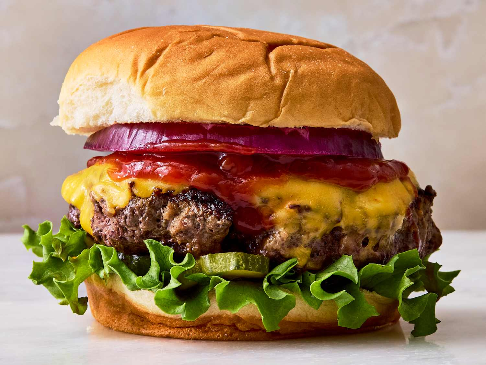

Sample Analysis
Consumers Hate ‘Price Discrimination,’ but They Sure Love a Discount
By Lydia DePillis@The New York Times, April ^, 2024
Click on any colored text to see the analysis of that part of the text.

It’s been a strange and maddening couple of years for consumers, with prices of essential goods soaring and then sinking, turning household budgets upside down.
Perhaps that’s why, in late February, the internet revolted over Wendy’s plan to test changing its menu prices across the day. If the Breakfast Baconator winds up costing $6.99 at 7 a.m. and $7.99 three hours later, what in life can you really count on anymore? The company later issued a statement saying it would not raise prices during busy parts of the day, but rather add discounts during slower hours. Nevertheless, the episode won’t stop the continued spread of so-called dynamic pricing, which describes an approach of setting prices in response to shifting patterns of demand and supply. It might not even stop the growth of “personalized pricing,” which targets individuals based on their personal willingness to pay.
And in many circumstances, customers may come around — if they feel companies are being forthright about how they’re changing prices and what information they’re using to do it.
“There’s a need for some transparency, and it has to make sense to consumers,” said Craig Zawada, a pricing expert with PROS, a consultancy that helped pioneer dynamic pricing by airlines in the 1980s and now works across dozens of other industries. “In general, from a buyer standpoint, there has to be this perception of fairness.”
Dynamic pricing, by one name or another, has been around since the dawn of merchandising. Sometimes it’s a means of maximizing return on fixed expenses, such as labor: Happy hour is a way to boost bar traffic before the after-work rush, for example. (You might say Wendy’s was attempting a happy hour for Baconators.) “Load balancing” is a similar concept in energy and transportation. Utilities charge less for power overnight, and transit agencies impose higher fares during rush hour to encourage users to shift toward off-peak times, when energy and trains are in less demand. Other times, it’s an effort to liquidate perishable or seasonal goods, like fresh produce at a grocery store or winter coats at Macy’s. Then there’s “surge pricing” on ride-hailing platforms, which is meant to quickly prod more drivers to start picking up passengers. Some commodity goods, like gasoline, fluctuate daily with international markets.
In the analog era, changing prices was costly, requiring manually updating signs or applying markdown stickers. As restaurants, retailers, parking garages, gyms, salons and event venues became more automated, price changes became effortless even at brick-and-mortar locations.
Robert Orndorff is the vice president for product development at Spectrio, which makes digital signage — a key tool for smoothly adjusting price levels, and increasingly common in many industries. Signs can be connected to inventory systems that automatically adjust prices as supplies dwindle, for example, and changes can be rolled out quickly in response to competitors’ moves.
“You have all these dynamic things going on that would make you want to change what’s on that screen at any given time,” Mr. Orndorff said. “The technology absolutely enables all that.”
It’s easy to understand why companies want to change prices more frequently: to make more money. But does that mean that as dynamic pricing spreads, prices will be higher on average?
Senator Sherrod Brown, Democrat of Ohio, posed the question to the Federal Reserve chair, Jerome H. Powell, at an oversight hearing in March, calling the technique “just another way for corporations to make it harder for consumers to seek out lower prices.”
“Are you concerned that the wide adoption of these pricing schemes, if you will, contribute to inflation?” Mr. Brown asked. Mr. Powell responded that dynamic pricing lowers prices as well as raises them, and that the overall impact on price levels isn’t yet known. Part of the concern comes from the idea that dynamic pricing is often enabled by algorithms, which are opaque to consumers and regulators, and can be tools of collusion. The Federal Trade Commission recently filed a legal brief warning that price fixing by algorithms is still illegal, even without explicit human direction. And when one company dominates the market, dynamic pricing is more likely to inflate prices overall.
But in a competitive environment, dynamic pricing can also lead to price wars that benefit consumers. Most companies use the strategy to try to broaden their reach, according to pricing experts, increasing their revenues by bringing in new customers rather than making more money on each one.
In a recent study of a large restaurant chain that used an algorithm to vary prices for food delivery, diners reacted strongly, smoothing out orders across the day and enabling the company to bring in more revenue even as it lowered prices on average. Or take airlines: Lowering fares far in advance allows more price-sensitive, date-flexible leisure travelers to afford the trip, while business travelers pay much more for last-minute tickets.
Those decisions can be increasingly targeted, since companies have vast troves of data about their customers, and direct connections with them through smartphone apps. Jean-Pierre Dubé is a professor of marketing at the University of Chicago’s Booth School of Business who has studied personalized pricing. In one experiment, two movie theaters offered mobile discounts to people who were located closer to their competitor, effectively creating a two-tier price structure. (This is common with senior and student discounts.) In the end, both moviegoers and theaters came out ahead.
“When both firms do it, the prices go down a ton,” Dr. Dubé said. “The only reason the firms aren’t harmed profit-wise is that you can generate enough new customers who wouldn’t have otherwise gone to a movie to make up for it.” If companies did this more often, they might end up charging wealthier people more, effectively creating a progressive cost structure for goods and services. For example, a 2017 economics paper found that grocery stores could make more money by offering lower prices in poor neighborhoods, which they currently tend not to do. It’s also clearly legal: The Federal Trade Commission wrote in 2018 that “absent unfair and deceptive conduct,” personalized pricing itself provides “no basis for intervention.” But few companies have embraced the strategy, fearing the kind of fury that Wendy’s faced — or, at least, don’t charge different sticker prices for different people, which draws accusations of the uglier term “price discrimination.” Instead, they’ve found more subtle ways to personalize the shopping experience that create essentially the same result.
Zohar Gilad runs Fast Simon, a company that helps retailers optimize their websites. Instead of offering different prices, they might display higher-end items for customers with a free-spending buying history, and clearance items for bargain hunters. Targeted coupons for hesitant browsers also create a personalized price by another name, creating a sale that might not have happened. “Say if you search for something and you didn’t buy it, you may get an email saying: ‘Hey, you have great taste. We saw you looking for black boots. Here’s a 20 percent coupon,’” Mr. Gilad said. “I think that personalization, done correctly, can be good and serve both shoppers and the merchants well.”
Nonetheless, some retailers prefer the loyalty that can stem from stable prices, even if it means forgoing short-term profits. Walmart, with its Every Day Low Prices approach, eschews coupons and rarely discounts anything. The practice “helps us earn trust with our customers, because they don’t have to chase sales and can count on us to consistently offer everyday low prices,” said Molly Blakeman, a Walmart spokeswoman.
Retailers also must take care to avoid the appearance of discrimination. The Princeton Review came under scrutiny when ProPublica revealed that because it charged higher rates for test preparation in certain ZIP codes, Asian American students tended to pay more than other groups. Researchers found that in Chicago, Uber’s and Lyft’s pricing algorithms resulted in higher fares in neighborhoods with more nonwhite residents. The companies said their pricing was based on demand patterns and not with any intent to discriminate. The most important factor, said the Consumer Federation of America’s director of consumer protection, Erin Witte, is that shoppers understand the rules that merchants have created. Problems arise when there’s an “informational imbalance,” especially when it comes to something as existential as food, which may have fueled the Wendy’s backlash.
“When they feel like they can participate meaningfully in a negotiation about price, everyone understands on some level that a business is going to make money on a transaction,” Ms. Witte said. “But when you feel like you’re the subject of price manipulation that you as the consumer don’t have any access to, and certainly can’t predict with any measure of certainty, it just feels very unfair.”